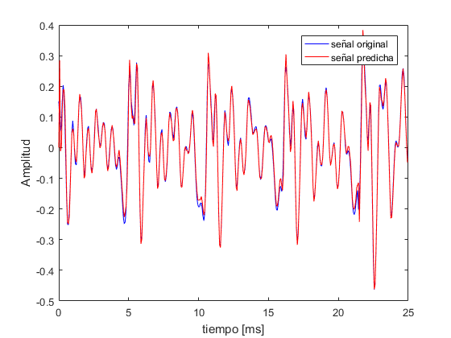
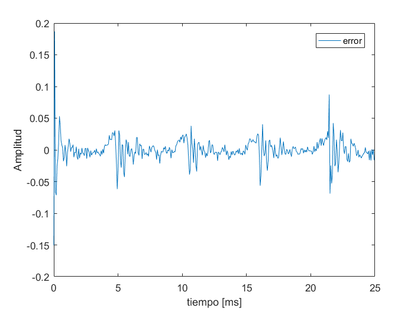
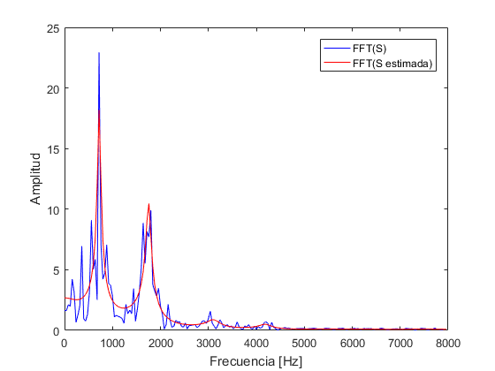
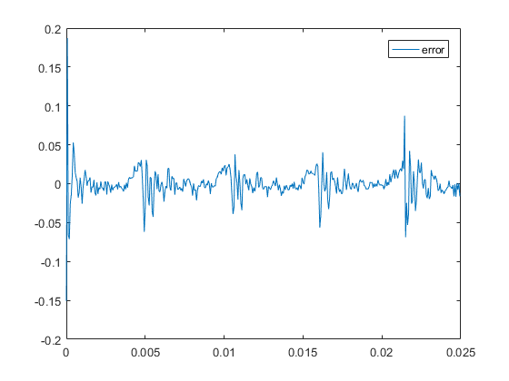

Práctica 4: Linear Predictive Coding(LPC)
Vázquez Matías - Padron:91523 - mfvazquezfiuba@gmail.com
Contents
LPC y la envolvente del espectro
Se realizará un chequeo aplicando LPC a una sección específica de ancho temporal fijo sobre una señal, para observar la envolvente del espectro.
Constantes utilizadas
- ventana: el ancho de la ventana utiliaza, en mseg.
- ancho: es la cantidad de elementos del audio que componen 25 mseg de audio.
- inicio: subindice a partir del cual se aplica la ventana.
- M: numero de coeficientes utilizados
close all clear [audio, Fs] = audioread('fantasia.wav'); ventana = 25e-3; ancho = ventana * Fs; inicio = 14000; M = 20; S = audio(inicio:inicio+ancho-1); t = 0:1/Fs:ventana-1/Fs; f = 0:Fs/ancho:Fs - Fs/ancho;
S_estimado
autocorrelacion = xcorr(S); rho = autocorrelacion(ancho:ancho+M-1); % rho = [rho(0) rho(1) ... rho(M)] subindices = toeplitz(1:M-1); R = rho(subindices); B= R\rho(2:M); % inv(R) * rho(2:M) S_estimado = filter([0; B],1 ,S); % Filter es un filtro causal figure plot(t, S,'b') hold on plot(t, S_estimado,'r');
FFT
G = sqrt( rho(1) - B' * rho(2:end)); fft_S = abs(fft(S)); fft_S_estimado = abs(freqz(G,[1;-B], ancho, 'whole')); figure plot(f(1:ancho/2),fft_S(1:ancho/2),'b') hold on plot(f(1:ancho/2),fft_S_estimado(1:ancho/2),'r'); legend('FFT(S)', 'FFT(S estimada)')
ERROR
error = S_estimado-S; figure plot(t,error); legend('error') [error, zf] = filter([-1;B], 1, S); figure plot(t,error); legend('error') 